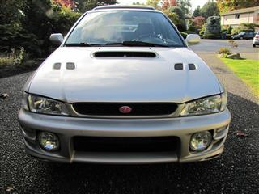 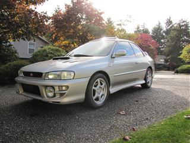 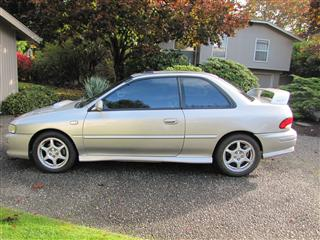 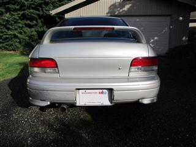 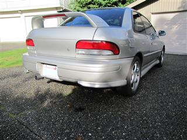 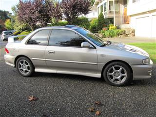 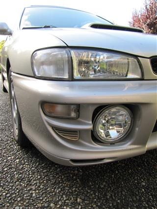
For Sale in Redmond, Washington
2000 Subaru Impreza 2.5RS
Silverlight Metallic
Black Leather Interior
122,793 miles - Original Owner
5-Speed Manual Transmission
Runs like new, but the head gaskets have recently started leaking
(more info)
Kumho Solus tires with only 4000 miles
Clean interior
$5000 firm
Contact:
forsale@2000subaru.com
Mods:
Black Leather Interior by
Classic Soft Trim
18mm rear sway bar
Transmission mount
Short shifter
Painted side skirts
Rear bumper skirts (painted)
Replaced all yellow lenses with clear ones
Painted bumper vents
Pioneer head unit attached to the factory premium speaker system, plus 2 12" JL subwoofers in the trunk
Tinted windows
Trunk light
Impreza grill emblem
History, Issues, and Flaws
I am the original owner - purchased in November 1999
The car was badly wrecked in 2000, but thoroughly repaired, and has a clean title
(more info/pics)
It has a few bumps and bruises, a broken rear bumper, and a little minor rust
(more info/pics)
Intermittent moisture in the cabin and the trunk
The head gaskets have recently started leaking
(more info)
Service History
10/9/2002 - 30,157 miles
30,000 mile service and recalled front oxygen (A/F ratio) sensor (WXW80)
1/2/2003 - 31,981 miles
Warranty replacement of center exhaust pipe
5/13/2004 - 60,895 miles
60,000 mile service and recalled engine cooling system conditioner (WWP99)
6/1/2004 - 61,615 miles
Warranty replacement of horn and repair of trunk release cable
6/12/2004 - 62,000 miles
New brake pads on all wheels
12/24/2004 - 70,810 miles
New tires and 4-wheel alignment
2/3/2006 - 84,705 miles
Replaced rear wheel bearings, calipers, rotors, and pads
2/3/2006 - 84,705 miles
Replaced catalytic converter
5/21/2007 - 99,984 miles
100,000 mile service, including new timing belt
5/24/2007 - 100,118 miles
Replaced front brakes
5/19/2010 - 118,450 miles
120,000 mile service
5/19/2010 - 118,450 miles
Replaced leaking valve cover and bad knock sensor
6/24/2010 - 118,849 miles
New tires and 4-wheel alignment
6/24/2010 - 118,849 miles
Replaced rear wheel bearings
Full service history (including 33 oil changes, averaging every 3720 miles) available with test drive
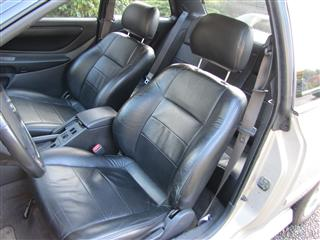 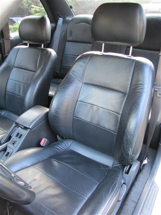 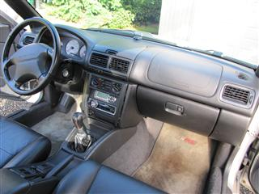 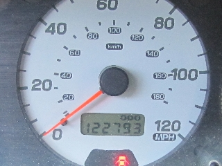 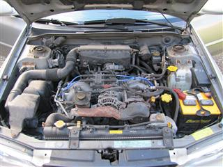 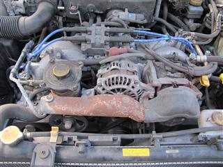 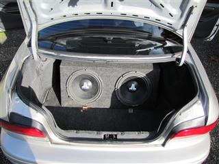
 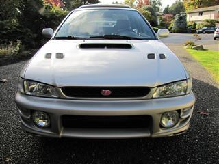
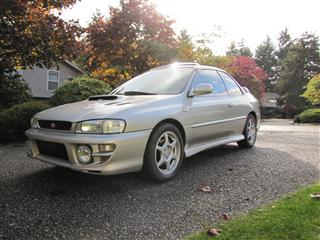
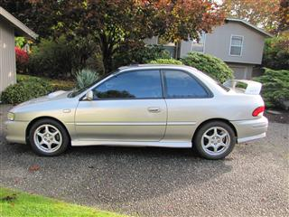
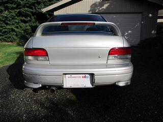
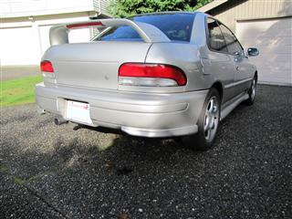
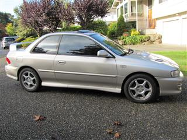
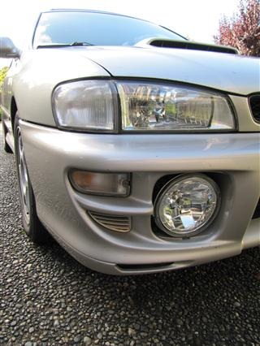
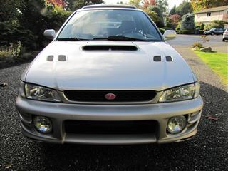
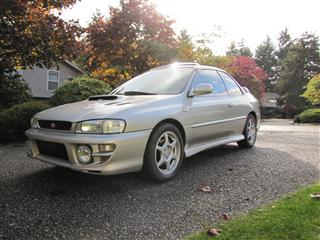
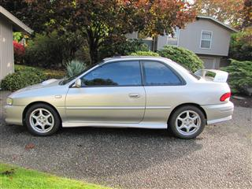
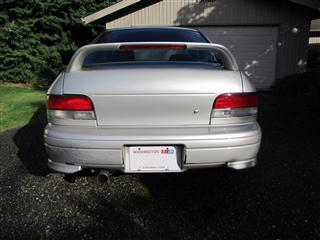
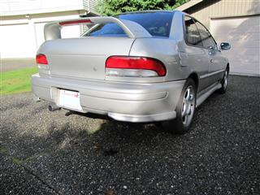
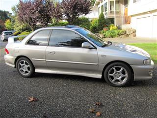
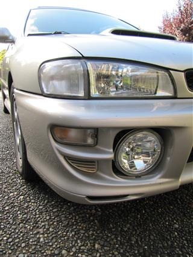
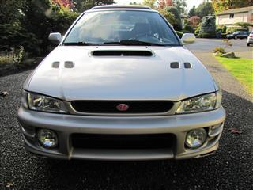
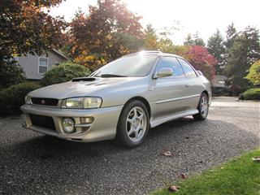
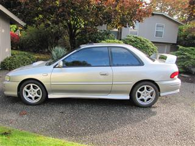
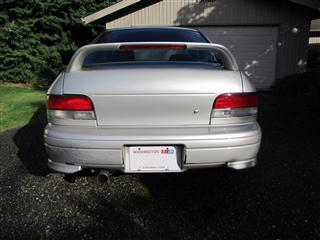
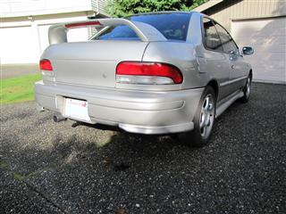
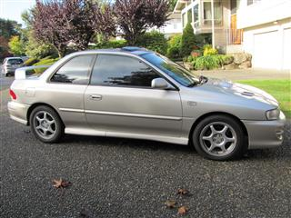
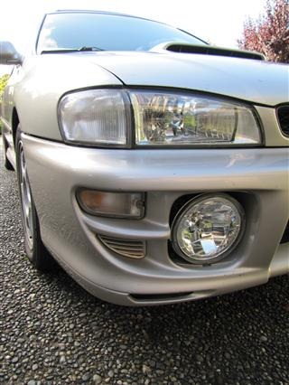
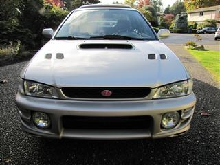
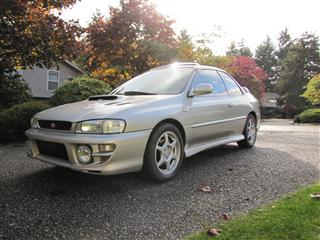
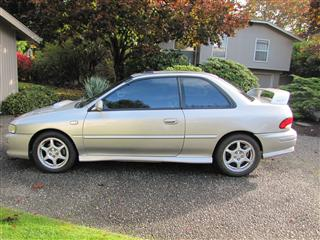
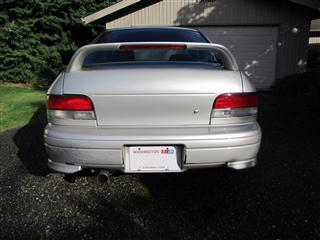
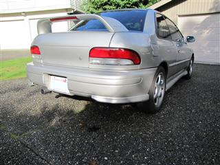
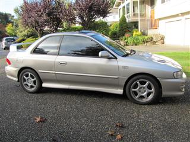
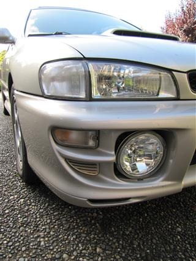